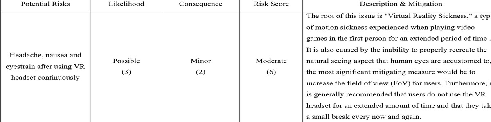
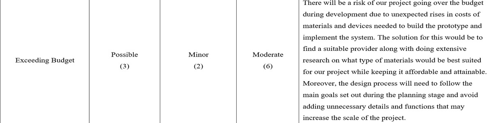
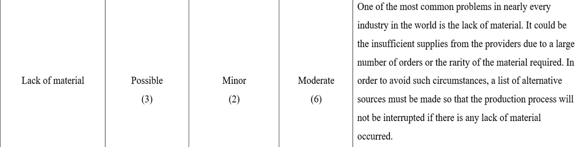
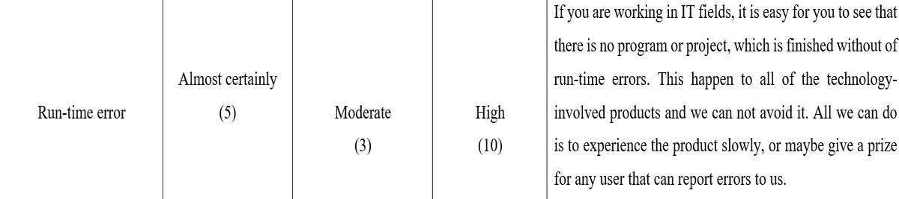
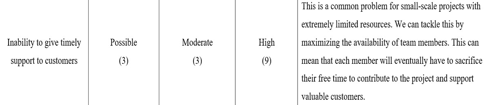

1. Aim
As mentioned above, the pandemic has rendered many of our daily services inaccessible and remote working has proven to be challenging for many professions. Therefore, a solution to improve the experience of those who work from home is required. Our vision for this project is to successfully design a VR headset system with an interactive and dynamic virtual environment that would be unaffected by changes in real-life settings, allowing individuals to work, learn, and relax more effective from home. To accomplish this, we would need to meet the following criteria :
2. Plans and Progresses
...
3. Roles
After carefully discussing the upcoming project idea, we move to the division of the roles. In this part, the most important thing is that we have to equalize everyone’s contribution but also be able for our teammates to make use of their skills. Firstly, Quan and Tri can find all of the possible components on the Internet for the hardware, look for advice from professionals, or learn by themselves about the outline of the VR headset. To be more in detail, Quan may want to craft, beautify the component for aesthetic and that can attract more customers, or maybe he can also do the arrangement part so that all of the ingredients can link with each other within the minimum space cost. Tri, with his knowledge, it is easy for him to connect and conduct electrical wiring, check for electricity, safety, and validity of the wearer. Secondly, Huy and Duy will be in charge of the software technologies in this project. Huy can start with building up the prototype and scenes within the VR headset such as log-in screen, functional buildings, characters while Duy can take care of the hand movements of the controllers, wireless connections, and even the space photosensitive of the users.
4. Scopes and Limits
4.1 Deliverables ( Scopes )
--- An immersive environment of the world will be designed as a small town with applications acting as real functional buildings such as hospitals, libraries, malls, and stadiums. Those places would be staffed with AI bots and avatars of real-life staff of these establishments to assist the user with their needs.
--- Users can move around by gesturing with the hand-held controls.
4.2 Non-Deliverables ( Limits )
5. Tools and Technologies
...
6. Testing
For this stage, we will be focusing on testing our project in order to find out bugs, run-time errors, physical errors, and glitches before we move on to any further implementation. First, we will do the software test, most of the compilers nowadays have debugged functions so this will not take long. The main problem here is the run-time errors, it is hard to find out and time-consuming. After this, we move to hardware testing. At this point, it is important for us to check that there are no redundant wires, no electrical leakages, and the headwear is suitable and comfortable with the wearer. After all, we will choose professional testers to wear this and experience this VR headset. Their job is to report back to us the feelings while wearing that headset, and any new errors. The next step for us is to carry on surveys and open a testing phase to a wider range. Besides, we will tell them to do some specific functions such as weird test cases, or even doing things when the Internet speed is super slow. However, they still can freely explore the new virtual world. More and more people who are interested in this headset can participate and give feedback. Lastly, we will fix and upgrade our project idea according to the feedback and the market trend.
7. Timeframe
...
8. Risks
    9. Group communication and processes
Communication between teammates in a group is the most significant part while doing a team project. It is a fact that most of the failures happened because there was a misunderstanding in communication between people. Here, the main way that we talk to each other is through an online platform - Meeting in Microsoft Teams. We used this from the start of Assignment 2 until now, this is really helpful. Besides, we also use Messenger from Meta, Google Docs, Word, in order to save files and update, progress to each other. Regarding the frequency, our communication occurs at least once, and up to two times a week. In the meetings, we usually update our own processes to each other first, and then we start to talk about how well the overall report is. After that, we will discuss the unfinished parts and set fixed deadlines for them. This is to control the process and through this, we can easily keep track of everyone’s parts. In the upcoming week, which is week 12, we plan to have some offline meetings to practice our presentation as well as discuss some last parts of our Assignment 3 report.
If a group member does not interact with the team on a regular basis, we will try to meet and chat with them directly to see if they are having any challenges at work or in their personal lives. If they're having trouble finishing a task, the team will assist them in resolving the issue and assign them to a less challenging duty. However, if a team member is having personal troubles and continues to refuse to communicate or contribute to the team, we will have no choice but to reduce their contribution to 0% and report it to the lecturer.